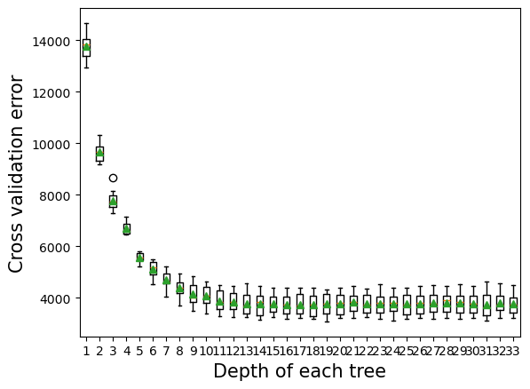
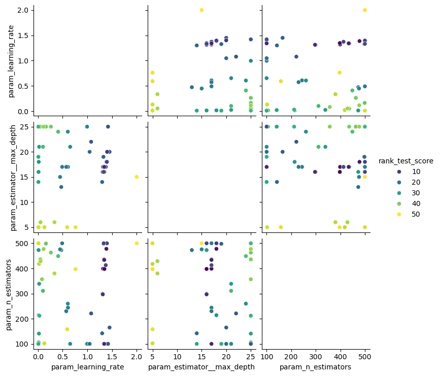

import pandas as pd
import numpy as np
import seaborn as sns
import matplotlib.pyplot as plt
from sklearn.metrics import mean_squared_error
from sklearn.model_selection import cross_val_score,train_test_split, KFold, cross_val_predict
from sklearn.metrics import root_mean_squared_error,r2_score,roc_curve,auc,precision_recall_curve, accuracy_score, \
recall_score, precision_score, confusion_matrix
from sklearn.tree import DecisionTreeRegressor,DecisionTreeClassifier
from sklearn.model_selection import GridSearchCV, ParameterGrid, StratifiedKFold
from sklearn.ensemble import BaggingRegressor,BaggingClassifier,AdaBoostRegressor,AdaBoostClassifier, \
RandomForestRegressor
from sklearn.pipeline import Pipeline
from sklearn.compose import ColumnTransformer
from sklearn.preprocessing import OneHotEncoder, FunctionTransformer
import itertools as it
import time as time
from skopt import BayesSearchCV
from skopt.space import Real, Categorical, Integer
from skopt.plots import plot_objective, plot_histogram, plot_convergence
import warnings
from IPython import display8 Adaptive Boosting
After learning how Bagging and Random Forest reduce variance by aggregating many trees,
we now turn to a different strategy: Boosting.
Boosting builds trees sequentially, with each new tree focusing on correcting the mistakes made by the previous ones.
Read section 8.2.3 of the book before using these notes.
For the exact algorithms underlying the AdaBoost algorithm, check out the papers AdaBoostRegressor() and AdaBoostClassifier().
8.1 What is AdaBoost?
AdaBoost stands for Adaptive Boosting.
It was one of the first boosting algorithms developed.
The core idea behind AdaBoost:
- Train a weak learner (usually a shallow decision tree) on the original data.
- Increase the weights of examples that the learner misclassified.
- Train the next learner on this updated, reweighted data.
- Repeat this process, focusing more and more on hard-to-predict examples.
The final prediction is a weighted combination of all the weak learners.
8.2 AdaBoost Intuition
- Easy-to-classify points are de-emphasized.
- Hard-to-classify points are emphasized.
- Each learner adapts to the mistakes made by previous learners — hence “adaptive” boosting.
- Better-performing learners are given higher weight in the final prediction.
Over time, the model becomes better at handling difficult cases.
8.3 How AdaBoost Works (High-Level Steps)
- Initialize equal weights for all training examples.
- Train a weak learner (e.g., decision stump).
- Evaluate its performance:
- Increase weights for misclassified points.
- Decrease weights for correctly classified points.
- Train the next learner using the updated weights.
- Repeat for a set number of learners (
n_estimators). - Combine all learners into a final weighted model.
8.4 Key Hyperparameters in AdaBoost
| Hyperparameter | Meaning | Typical Values |
|---|---|---|
n_estimators |
Number of weak learners | 50–500 |
learning_rate |
Shrinks each learner’s contribution | 0.01–1.0 |
estimator |
Type of weak learner (default: decision stump) | Shallow trees |
- Lowering
learning_ratetypically requires more estimators but improves generalization.
8.5 AdaBoost for Regression
We will revisit the car dataset we used earlier and evaluate how AdaBoost performs compared to a single decision tree and a bagging ensemble
# Load the dataset
car = pd.read_csv('Datasets/car.csv')
car.head()| brand | model | year | transmission | mileage | fuelType | tax | mpg | engineSize | price | |
|---|---|---|---|---|---|---|---|---|---|---|
| 0 | vw | Beetle | 2014 | Manual | 55457 | Diesel | 30 | 65.3266 | 1.6 | 7490 |
| 1 | vauxhall | GTC | 2017 | Manual | 15630 | Petrol | 145 | 47.2049 | 1.4 | 10998 |
| 2 | merc | G Class | 2012 | Automatic | 43000 | Diesel | 570 | 25.1172 | 3.0 | 44990 |
| 3 | audi | RS5 | 2019 | Automatic | 10 | Petrol | 145 | 30.5593 | 2.9 | 51990 |
| 4 | merc | X-CLASS | 2018 | Automatic | 14000 | Diesel | 240 | 35.7168 | 2.3 | 28990 |
print(car.info())<class 'pandas.core.frame.DataFrame'>
RangeIndex: 7632 entries, 0 to 7631
Data columns (total 10 columns):
# Column Non-Null Count Dtype
--- ------ -------------- -----
0 brand 7632 non-null object
1 model 7632 non-null object
2 year 7632 non-null int64
3 transmission 7632 non-null object
4 mileage 7632 non-null int64
5 fuelType 7632 non-null object
6 tax 7632 non-null int64
7 mpg 7632 non-null float64
8 engineSize 7632 non-null float64
9 price 7632 non-null int64
dtypes: float64(2), int64(4), object(4)
memory usage: 596.4+ KB
NoneX = car.drop(columns=['price'])
y = car['price']
X_train, X_test, y_train, y_test = train_test_split(X, y, test_size=0.2, random_state=42)
# extract the categorical columns and put them in a list
categorical_feature = X.select_dtypes(include=['object']).columns.tolist()
# extract the numerical columns and put them in a list
numerical_feature = X.select_dtypes(include=['int64', 'float64']).columns.tolist()encoder = OneHotEncoder(handle_unknown='ignore', sparse_output=False)
X_train_encoded = encoder.fit_transform(X_train[categorical_feature])
X_test_encoded = encoder.transform(X_test[categorical_feature])
# Convert the encoded features back to DataFrame
X_train_encoded_df = pd.DataFrame(X_train_encoded, columns=encoder.get_feature_names_out(categorical_feature))
X_test_encoded_df = pd.DataFrame(X_test_encoded, columns=encoder.get_feature_names_out(categorical_feature))
# Concatenate the encoded features with the original numerical features
X_train_final = pd.concat([X_train_encoded_df, X_train[numerical_feature].reset_index(drop=True)], axis=1)
X_test_final = pd.concat([X_test_encoded_df, X_test[numerical_feature].reset_index(drop=True)], axis=1)8.5.1 Let’s build a adaboost regressor model with default settings
# build a adaboost regressor model with default parameters
adaboost_regressor = AdaBoostRegressor(random_state=0)
# fit the model
adaboost_regressor.fit(X_train_final, y_train)
# predict the test set
y_pred = adaboost_regressor.predict(X_test_final)
# calculate the mean squared error
rmse = root_mean_squared_error(y_test, y_pred)
print(f'RMSE: {rmse:.2f}')
print(f'R2 Score: {r2_score(y_test, y_pred)}')
# calculate the RMSE and R^2 score for the training data
y_pred_train = adaboost_regressor.predict(X_train_final)
rmse_train = root_mean_squared_error(y_train, y_pred_train)
r2_train = r2_score(y_train, y_pred_train)
print(f'Adaboost Train RMSE: {rmse_train:.2f}')
print(f'Adaboost Train R^2: {r2_train:.2f}')
# calculate the test scoreRMSE: 10239.74
R2 Score: 0.6426025126917443
Adaboost Train RMSE: 10081.26
Adaboost Train R^2: 0.628.5.1.1 ❓ Why AdaBoost Perform Worse Here
Default base estimator is very weak:
By default, AdaBoost uses Decision Stumps (DecisionTreeRegressor(max_depth=1)), which are extremely shallow and tend to underfit the data badly.Learning rate (
learning_rate=1.0) is too aggressive:
When using very weak learners, a high learning rate can cause the boosting process to fail to properly build up model strength, leading to poor performance.Dataset characteristics:
This dataset is small and not very noisy, using very shallow trees combined with a high learning rate can cause severe underfitting.
What should we do next to reduce bias
- Use deeper Trees as Base Learners
- Tune Learning Rate
- Increase the Number of Estimators
8.5.2 Impact of Tree Depth
By default, AdaBoost uses shallow decision stumps (max_depth=1) as weak learners.
However, slightly increasing the tree depth can make each learner more expressive,
helping the ensemble capture more complex patterns in the data.
This often leads to a reduction in cross-validation RMSE and improved model performance,
especially when the underlying relationships in the data are non-linear.
From our previous exploration, we found that the fully grown decision tree has a depth of 34 on this dataset.
In this section, we’ll experiment with limiting the tree depth and observe how it affects the model’s RMSE.
The goal is to find a depth that balances bias and variance, leading to better generalization.
# get a list of models to evaluate
def get_models():
models = dict()
# explore depths from 1 to 10
for i in range(1,34):
# define base model
base = DecisionTreeRegressor(max_depth=i)
# define ensemble model
models[str(i)] = AdaBoostRegressor(estimator=base,n_estimators=100, learning_rate=0.1, random_state=0)
return models
# evaluate a given model using cross-validation
def evaluate_model(model, X, y):
# define the evaluation procedure
cv = KFold(n_splits=10, shuffle=True, random_state=1)
# evaluate the model and collect the results
scores = -cross_val_score(model, X, y, scoring='neg_root_mean_squared_error', cv=cv, n_jobs=-1)
return scores
# get the models to evaluate
models = get_models()
# evaluate the models and store results
results, names = list(), list()
for name, model in models.items():
# evaluate the model
scores = evaluate_model(model, X_train_final, y_train)
# store the results
results.append(scores)
names.append(name)
# summarize the performance along the way
print('>%s %.3f (%.3f)' % (name, np.mean(scores), np.std(scores)))
plt.boxplot(results, labels=names, showmeans=True)
plt.ylabel('Cross validation error',fontsize=15)
plt.xlabel('Depth of each tree',fontsize=15);>1 13770.872 (518.361)
>2 9673.586 (398.116)
>3 7783.875 (393.200)
>4 6686.293 (253.234)
>5 5575.918 (176.859)
>6 5106.235 (342.995)
>7 4695.491 (353.584)
>8 4395.372 (366.340)
>9 4143.296 (422.938)
>10 4064.871 (414.840)
>11 3880.994 (433.105)
>12 3831.714 (396.971)
>13 3773.891 (437.190)
>14 3771.442 (425.043)
>15 3769.082 (388.875)
>16 3741.356 (394.563)
>17 3740.153 (415.062)
>18 3721.954 (444.760)
>19 3765.976 (425.594)
>20 3777.496 (425.025)
>21 3827.491 (434.580)
>22 3761.119 (409.760)
>23 3773.776 (429.259)
>24 3763.150 (408.907)
>25 3763.396 (417.512)
>26 3782.507 (405.136)
>27 3791.885 (446.067)
>28 3812.705 (406.567)
>29 3792.121 (445.264)
>30 3780.123 (429.651)
>31 3739.596 (472.987)
>32 3797.480 (426.929)
>33 3754.727 (417.368)
As shown in the plot, very shallow trees (e.g., max_depth=1 to 3) result in high cross-validation error due to underfitting.
As tree depth increases, the model becomes more expressive, and the error drops sharply up to around depth 10.
Beyond this point, deeper trees offer diminishing returns, and performance stabilizes.
> 🔍 This suggests that slightly deeper trees (e.g., depth 5–10) strike a good balance between model complexity and generalization in AdaBoost.
8.5.3 Impact of Learning Rate
In boosting algorithms such as AdaBoost or Gradient Boosting, the learning_rate controls how much each new tree contributes to the overall model.
Each new tree makes a correction to the current prediction, and the learning rate scales how aggressively that correction is applied.
- 🔺 A high learning rate takes large correction steps — fast learning, but higher risk of overshooting or overfitting.
- 🔹 A low learning rate takes small correction steps — more stable, but may underfit unless paired with enough trees.
8.5.3.1 Effect on Performance
| Learning Rate | Behavior | Risk |
|---|---|---|
| Very Small (e.g., 0.01) | Learns slowly, needs many trees | Underfitting if not enough trees |
| Moderate (e.g., 0.1–0.2) | Balanced correction, stable learning | Often optimal |
| Large (e.g., 0.5–1.0) | Learns quickly, may overshoot | Overfitting or unstable learning |
Key takeaway: Small learning rates usually generalize better — especially when combined with more estimators.
def get_models():
models = dict()
learning_rates = [0.01, 0.02, 0.04, 0.08, 0.1, 0.15, 0.2, 0.3, 0.6, 1.0]
for i in range(len(learning_rates)):
key = learning_rates[i]
models[key] = AdaBoostRegressor(learning_rate=learning_rates[i])
return models
# evaluate a given model using cross-validation
def evaluate_model(model, X, y):
# define the evaluation procedure
cv = KFold(n_splits=10, shuffle=True, random_state=1)
# evaluate the model and collect the results
scores = -cross_val_score(model, X, y, scoring='neg_root_mean_squared_error', cv=cv, n_jobs=-1)
return scores
# get the models to evaluate
models = get_models()
# evaluate the models and store results
results, names = list(), list()
for name, model in models.items():
# evaluate the model
scores = evaluate_model(model, X_train_final, y_train)
# store the results
results.append(scores)
names.append(name)
# summarize the performance along the way
print('>%s %.1f (%.1f)' % (name, np.mean(scores), np.std(scores)))
# plot model performance for comparison
plt.figure(figsize=(7, 7))
plt.boxplot(results, labels=names, showmeans=True)
plt.ylabel('Cross validation error',fontsize=15)
plt.xlabel('Learning rate',fontsize=15);>0.01 8877.6 (725.1)
>0.02 8797.2 (656.7)
>0.04 8554.4 (540.3)
>0.08 7988.1 (479.9)
>0.1 7763.7 (345.8)
>0.15 7754.0 (380.3)
>0.2 7862.9 (368.8)
>0.3 8024.6 (345.3)
>0.6 9078.9 (205.6)
>1.0 10508.4 (507.6)
The plot shows that moderate learning rates (0.1–0.2) yield the best and most stable model performance, while very small or very large values hurt generalization — likely due to underfitting or overfitting.
8.5.4 Impact of Number of Trees in Boosting
As the number of trees increases in a boosting model, the prediction bias tends to decrease, while the variance may increase.
This creates a trade-off:
- Too few trees → underfitting (high bias)
- Too many trees → potential overfitting (high variance)
There is typically an optimal number of trees that minimizes the overall prediction error, which can be identified using cross-validation.
def get_models():
models = dict()
# define number of trees to consider
n_trees = [10, 20, 30, 40, 50, 60, 70, 80, 90, 100, 200, 300, 500]
for n in n_trees:
models[str(n)] = AdaBoostRegressor(n_estimators=n,random_state=1, learning_rate=0.1)
return models
# evaluate a given model using cross-validation
def evaluate_model(model, X, y):
# define the evaluation procedure
cv = KFold(n_splits=5, shuffle=True, random_state=1)
# evaluate the model and collect the results
scores = -cross_val_score(model, X, y, scoring='neg_root_mean_squared_error', cv=cv, n_jobs=-1)
return scores
# get the models to evaluate
models = get_models()
# evaluate the models and store results
results, names = list(), list()
for name, model in models.items():
# evaluate the model
scores = evaluate_model(model, X_train_final, y_train)
# store the results
results.append(scores)
names.append(name)
# summarize the performance along the way
print('>%s %.3f (%.3f)' % (name, np.mean(scores), np.std(scores)))
# plot model performance for comparison
plt.boxplot(results, labels=names, showmeans=True)
plt.ylabel('Cross validation error',fontsize=15)
plt.xlabel('Number of trees',fontsize=15);>10 8901.126 (529.620)
>20 8640.382 (495.164)
>30 8328.349 (539.563)
>40 7972.809 (387.803)
>50 7907.280 (359.779)
>60 7927.212 (305.995)
>70 7904.131 (281.108)
>80 7914.196 (295.777)
>90 7917.841 (274.357)
>100 7927.393 (260.542)
>200 8286.386 (180.913)
>300 8884.444 (230.006)
>500 10024.047 (421.340)With a learning rate of 0.1, the validation error initially decreases, then levels off, and eventually starts to increase — indicating that overfitting is beginning to occur
8.5.5 Tuning Hyperparameters Simultaneously
In the following section, we will use BayesSearchCV instead of GridSearchCV to efficiently tune multiple hyperparameters at once.
Unlike grid search, which exhaustively evaluates all combinations, Bayesian optimization intelligently explores the hyperparameter space by learning from previous evaluations.
This allows us to find a high-performing model using fewer iterations and less computation.
from skopt import BayesSearchCV
from skopt.space import Real, Integer
# Define the base estimator search space (DecisionTreeRegressor)
base_estimator = DecisionTreeRegressor()
# AdaBoost model (wrapped for BayesSearchCV)
adaboost = AdaBoostRegressor(estimator=base_estimator, random_state=42)
# Search space for tuning
search_space = {
'estimator__max_depth': Integer(5, 25),
'n_estimators': Integer(100, 500),
'learning_rate': Real(0.01, 2.0, prior='log-uniform')
}
# Set up the BayesSearchCV
opt = BayesSearchCV(
estimator=adaboost,
search_spaces=search_space,
n_iter=50,
scoring='neg_root_mean_squared_error', # or use 'r2'
cv=10,
random_state=42,
n_jobs=-1,
verbose=1
)
# Fit on training data
opt.fit(X_train_final, y_train)
# Best parameters
print("Best parameters found:")
print(opt.best_params_)Fitting 10 folds for each of 1 candidates, totalling 10 fits
Fitting 10 folds for each of 1 candidates, totalling 10 fits
Fitting 10 folds for each of 1 candidates, totalling 10 fits
Fitting 10 folds for each of 1 candidates, totalling 10 fits
Fitting 10 folds for each of 1 candidates, totalling 10 fits
Fitting 10 folds for each of 1 candidates, totalling 10 fits
Fitting 10 folds for each of 1 candidates, totalling 10 fits
Fitting 10 folds for each of 1 candidates, totalling 10 fits
Fitting 10 folds for each of 1 candidates, totalling 10 fits
Fitting 10 folds for each of 1 candidates, totalling 10 fits
Fitting 10 folds for each of 1 candidates, totalling 10 fits
Fitting 10 folds for each of 1 candidates, totalling 10 fits
Fitting 10 folds for each of 1 candidates, totalling 10 fits
Fitting 10 folds for each of 1 candidates, totalling 10 fits
Fitting 10 folds for each of 1 candidates, totalling 10 fits
Fitting 10 folds for each of 1 candidates, totalling 10 fits
Fitting 10 folds for each of 1 candidates, totalling 10 fits
Fitting 10 folds for each of 1 candidates, totalling 10 fits
Fitting 10 folds for each of 1 candidates, totalling 10 fits
Fitting 10 folds for each of 1 candidates, totalling 10 fits
Fitting 10 folds for each of 1 candidates, totalling 10 fits
Fitting 10 folds for each of 1 candidates, totalling 10 fits
Fitting 10 folds for each of 1 candidates, totalling 10 fits
Fitting 10 folds for each of 1 candidates, totalling 10 fits
Fitting 10 folds for each of 1 candidates, totalling 10 fits
Fitting 10 folds for each of 1 candidates, totalling 10 fits
Fitting 10 folds for each of 1 candidates, totalling 10 fits
Fitting 10 folds for each of 1 candidates, totalling 10 fits
Fitting 10 folds for each of 1 candidates, totalling 10 fits
Fitting 10 folds for each of 1 candidates, totalling 10 fits
Fitting 10 folds for each of 1 candidates, totalling 10 fits
Fitting 10 folds for each of 1 candidates, totalling 10 fits
Fitting 10 folds for each of 1 candidates, totalling 10 fits
Fitting 10 folds for each of 1 candidates, totalling 10 fits
Fitting 10 folds for each of 1 candidates, totalling 10 fits
Fitting 10 folds for each of 1 candidates, totalling 10 fits
Fitting 10 folds for each of 1 candidates, totalling 10 fits
Fitting 10 folds for each of 1 candidates, totalling 10 fits
Fitting 10 folds for each of 1 candidates, totalling 10 fits
Fitting 10 folds for each of 1 candidates, totalling 10 fits
Fitting 10 folds for each of 1 candidates, totalling 10 fits
Fitting 10 folds for each of 1 candidates, totalling 10 fits
Fitting 10 folds for each of 1 candidates, totalling 10 fits
Fitting 10 folds for each of 1 candidates, totalling 10 fits
Fitting 10 folds for each of 1 candidates, totalling 10 fits
Fitting 10 folds for each of 1 candidates, totalling 10 fits
Fitting 10 folds for each of 1 candidates, totalling 10 fits
Fitting 10 folds for each of 1 candidates, totalling 10 fits
Fitting 10 folds for each of 1 candidates, totalling 10 fits
Fitting 10 folds for each of 1 candidates, totalling 10 fits
Best parameters found:
OrderedDict({'estimator__max_depth': 16, 'learning_rate': 1.3460276374020355, 'n_estimators': 398})# Best score
print("Best score (RMSE):")
print(-opt.best_score_)Best score (RMSE):
3280.273309604182# evaluate the best model on the test set
best_model = opt.best_estimator_
y_pred_test = best_model.predict(X_test_final)
rmse_test = root_mean_squared_error(y_test, y_pred_test)
print(f'Test RMSE: {rmse_test:.2f}')
print(f'Test R^2: {r2_score(y_test, y_pred_test):.2f}')Test RMSE: 3989.52
Test R^2: 0.95Below is the plot showing the minimum cross-validated score computed obtained until ‘n’ hyperparameter values are considered for cross-validation.
# import plot_convergence from skopt
from skopt.plots import plot_convergence
plot_convergence(opt.optimizer_results_)
plt.show()
# access the full results
results_df = pd.DataFrame(opt.cv_results_)
results_df['mean_test_score'] = -results_df['mean_test_score']
results_df.head()| mean_fit_time | std_fit_time | mean_score_time | std_score_time | param_estimator__max_depth | param_learning_rate | param_n_estimators | params | split0_test_score | split1_test_score | ... | split3_test_score | split4_test_score | split5_test_score | split6_test_score | split7_test_score | split8_test_score | split9_test_score | mean_test_score | std_test_score | rank_test_score | |
|---|---|---|---|---|---|---|---|---|---|---|---|---|---|---|---|---|---|---|---|---|---|
| 0 | 27.288841 | 0.743828 | 0.243362 | 0.085644 | 13 | 0.472627 | 473 | {'estimator__max_depth': 13, 'learning_rate': ... | -3294.069041 | -3813.012426 | ... | -2756.999972 | -2932.996457 | -3575.875394 | -3939.806709 | -3177.591857 | -3766.324137 | -3573.518290 | 3424.096527 | 366.570915 | 19 |
| 1 | 17.667935 | 0.272929 | 0.097709 | 0.037637 | 22 | 1.077792 | 221 | {'estimator__max_depth': 22, 'learning_rate': ... | -3425.092032 | -3911.963174 | ... | -2779.928592 | -2983.762090 | -2930.152797 | -3924.408565 | -3440.000215 | -3206.956114 | -3554.256617 | 3353.027977 | 368.446075 | 14 |
| 2 | 8.346380 | 0.144302 | 0.054507 | 0.011088 | 14 | 1.300194 | 142 | {'estimator__max_depth': 14, 'learning_rate': ... | -3321.981911 | -4164.975787 | ... | -2725.368888 | -2880.655623 | -3542.504943 | -3951.995509 | -3251.140610 | -3233.160256 | -3651.305989 | 3403.423338 | 419.768357 | 17 |
| 3 | 30.282255 | 0.495589 | 0.178685 | 0.054628 | 21 | 0.024859 | 339 | {'estimator__max_depth': 21, 'learning_rate': ... | -3409.024380 | -5096.657461 | ... | -2763.126306 | -3056.556831 | -3554.147448 | -4526.278591 | -3471.156642 | -3489.118289 | -3832.937027 | 3671.805682 | 645.785144 | 29 |
| 4 | 27.381998 | 0.592005 | 0.195445 | 0.069875 | 21 | 0.101840 | 311 | {'estimator__max_depth': 21, 'learning_rate': ... | -3554.834507 | -5030.730461 | ... | -2786.992358 | -3032.669232 | -3554.205187 | -4512.125597 | -3486.494604 | -3709.185433 | -3678.304514 | 3702.954168 | 616.274481 | 35 |
5 rows × 21 columns
8.5.5.1 Analyzing BayesSearchCV Results
# Create 1x3 subplots
fig, axes = plt.subplots(1, 3, figsize=(18, 5), sharey=True)
# List of hyperparameters and axis labels
params = ['param_learning_rate', 'param_estimator__max_depth', 'param_n_estimators']
labels = ['Learning Rate', 'Max Depth', 'Number of Estimators']
# Plot each subplot
for ax, param, label in zip(axes, params, labels):
sc = ax.scatter(
results_df[param],
results_df['mean_test_score'],
c=results_df['rank_test_score'],
cmap='viridis',
s=100,
alpha=0.7
)
ax.set_xlabel(label, fontsize=13)
ax.grid(True)
# Set shared y-axis label and title
axes[0].set_ylabel('Mean Test Score (CV)', fontsize=13)
fig.suptitle('Hyperparameter Tuning Results', fontsize=16)
# Add shared colorbar
cbar = fig.colorbar(sc, ax=axes.ravel().tolist(), label='Rank Test Score');
3D scatterplot
Each point is a combination of the 3 hyperparameters.
Color indicates performance (darker = better).
You can rotate the 3D plot in Jupyter interactively!
from mpl_toolkits.mplot3d import Axes3D
import matplotlib.pyplot as plt
fig = plt.figure(figsize=(10, 7))
ax = fig.add_subplot(111, projection='3d')
p = ax.scatter(
results_df['param_learning_rate'],
results_df['param_estimator__max_depth'],
results_df['param_n_estimators'],
c=results_df['mean_test_score'],
cmap='viridis',
s=60,
alpha=0.8
)
ax.set_xlabel('Learning Rate')
ax.set_ylabel('Max Depth')
ax.set_zlabel('N Estimators')
fig.colorbar(p, label='Mean Test Score')
plt.title('3D Interaction of Hyperparameters')
plt.tight_layout()
plt.show()sorted_results = results_df.copy()
sorted_results = sorted_results[['param_learning_rate', 'param_estimator__max_depth', 'param_n_estimators', 'mean_test_score', 'std_test_score', 'rank_test_score']] # Convert to RMSE
sorted_results = sorted_results.sort_values(by='rank_test_score')
sorted_results.reset_index(drop=True, inplace=True)
sorted_results[:10] # Display the top 10 results| param_learning_rate | param_estimator__max_depth | param_n_estimators | mean_test_score | std_test_score | rank_test_score | |
|---|---|---|---|---|---|---|
| 0 | 1.346028 | 16 | 398 | 3280.273310 | 368.679254 | 1 |
| 1 | 1.339271 | 17 | 436 | 3285.379694 | 347.295833 | 2 |
| 2 | 1.318424 | 17 | 399 | 3286.757311 | 349.655468 | 3 |
| 3 | 1.386113 | 18 | 478 | 3289.156528 | 363.813811 | 4 |
| 4 | 1.342019 | 17 | 434 | 3291.786531 | 354.169181 | 5 |
| 5 | 1.340962 | 17 | 100 | 3300.807523 | 343.109325 | 6 |
| 6 | 1.313334 | 16 | 297 | 3304.849191 | 342.465107 | 7 |
| 7 | 1.401063 | 20 | 100 | 3309.832144 | 341.978057 | 8 |
| 8 | 1.309088 | 16 | 299 | 3312.005185 | 332.872216 | 9 |
| 9 | 1.396356 | 18 | 500 | 3317.350680 | 334.036525 | 10 |
Let’s analyze radeoffs/interactions
sns.pairplot(
results_df,
vars=[
'param_learning_rate',
'param_estimator__max_depth',
'param_n_estimators'
],
hue='rank_test_score',
palette='viridis'
);
from skopt.plots import plot_objective
plot_objective(opt.optimizer_results_[0], dimensions=None, size = 3)
plt.tight_layout()
plt.show()
8.5.6 Using Optuna for Hyperparameter Tuning
pip install optunaCollecting optuna
Downloading optuna-4.3.0-py3-none-any.whl.metadata (17 kB)
Collecting alembic>=1.5.0 (from optuna)
Downloading alembic-1.15.2-py3-none-any.whl.metadata (7.3 kB)
Collecting colorlog (from optuna)
Downloading colorlog-6.9.0-py3-none-any.whl.metadata (10 kB)
Requirement already satisfied: numpy in c:\users\lsi8012\appdata\local\anaconda3\lib\site-packages (from optuna) (1.26.4)
Requirement already satisfied: packaging>=20.0 in c:\users\lsi8012\appdata\roaming\python\python312\site-packages (from optuna) (24.2)
Requirement already satisfied: sqlalchemy>=1.4.2 in c:\users\lsi8012\appdata\local\anaconda3\lib\site-packages (from optuna) (2.0.30)
Requirement already satisfied: tqdm in c:\users\lsi8012\appdata\local\anaconda3\lib\site-packages (from optuna) (4.66.4)
Requirement already satisfied: PyYAML in c:\users\lsi8012\appdata\local\anaconda3\lib\site-packages (from optuna) (6.0.1)
Collecting Mako (from alembic>=1.5.0->optuna)
Downloading mako-1.3.10-py3-none-any.whl.metadata (2.9 kB)
Collecting typing-extensions>=4.12 (from alembic>=1.5.0->optuna)
Downloading typing_extensions-4.13.2-py3-none-any.whl.metadata (3.0 kB)
Requirement already satisfied: greenlet!=0.4.17 in c:\users\lsi8012\appdata\local\anaconda3\lib\site-packages (from sqlalchemy>=1.4.2->optuna) (3.0.1)
Requirement already satisfied: colorama in c:\users\lsi8012\appdata\roaming\python\python312\site-packages (from colorlog->optuna) (0.4.6)
Requirement already satisfied: MarkupSafe>=0.9.2 in c:\users\lsi8012\appdata\local\anaconda3\lib\site-packages (from Mako->alembic>=1.5.0->optuna) (2.1.3)
Downloading optuna-4.3.0-py3-none-any.whl (386 kB)
---------------------------------------- 0.0/386.6 kB ? eta -:--:--
------------------ --------------------- 174.1/386.6 kB 3.5 MB/s eta 0:00:01
---------------------------------------- 386.6/386.6 kB 4.8 MB/s eta 0:00:00
Downloading alembic-1.15.2-py3-none-any.whl (231 kB)
---------------------------------------- 0.0/231.9 kB ? eta -:--:--
---------------------------------------- 231.9/231.9 kB 7.2 MB/s eta 0:00:00
Downloading colorlog-6.9.0-py3-none-any.whl (11 kB)
Downloading typing_extensions-4.13.2-py3-none-any.whl (45 kB)
---------------------------------------- 0.0/45.8 kB ? eta -:--:--
---------------------------------------- 45.8/45.8 kB 2.4 MB/s eta 0:00:00
Downloading mako-1.3.10-py3-none-any.whl (78 kB)
---------------------------------------- 0.0/78.5 kB ? eta -:--:--
---------------------------------------- 78.5/78.5 kB 4.6 MB/s eta 0:00:00
Installing collected packages: typing-extensions, Mako, colorlog, alembic, optuna
Attempting uninstall: typing-extensions
Found existing installation: typing_extensions 4.11.0
Uninstalling typing_extensions-4.11.0:
Successfully uninstalled typing_extensions-4.11.0
Successfully installed Mako-1.3.10 alembic-1.15.2 colorlog-6.9.0 optuna-4.3.0 typing-extensions-4.13.2
Note: you may need to restart the kernel to use updated packages.ERROR: pip's dependency resolver does not currently take into account all the packages that are installed. This behaviour is the source of the following dependency conflicts.
streamlit 1.32.0 requires packaging<24,>=16.8, but you have packaging 24.2 which is incompatible.Step 1: Import
# import optuna
import optunaStep 2: Define the Objective Function
def objective(trial):
# Suggest hyperparameters
learning_rate = trial.suggest_float("learning_rate", 0.01, 2.0)
max_depth = trial.suggest_int("max_depth", 5, 25)
n_estimators = trial.suggest_int("n_estimators", 100, 500)
# Define model with trial parameters
base_estimator = DecisionTreeRegressor(max_depth=max_depth)
model = AdaBoostRegressor(
estimator=base_estimator,
learning_rate=learning_rate,
n_estimators=n_estimators,
random_state=42
)
# Cross-validation score (negative RMSE)
score = cross_val_score(model, X_train_final, y_train, scoring="neg_root_mean_squared_error", cv=5)
return -np.mean(score)Step 3: Run the study
study = optuna.create_study(direction="minimize")
study.optimize(objective, n_trials=20, timeout=600) # 50 trials or 10 min[I 2025-04-29 18:13:37,366] A new study created in memory with name: no-name-8c1fd49f-a877-442b-99b1-047e129cf2d6
[I 2025-04-29 18:13:55,695] Trial 0 finished with value: 3604.108244895723 and parameters: {'learning_rate': 0.2657114590825371, 'max_depth': 16, 'n_estimators': 118}. Best is trial 0 with value: 3604.108244895723.
[I 2025-04-29 18:14:39,369] Trial 1 finished with value: 3418.989299711666 and parameters: {'learning_rate': 1.3034198280227978, 'max_depth': 19, 'n_estimators': 299}. Best is trial 1 with value: 3418.989299711666.
[I 2025-04-29 18:15:01,876] Trial 2 finished with value: 6675.343723783454 and parameters: {'learning_rate': 1.8424651045294824, 'max_depth': 19, 'n_estimators': 422}. Best is trial 1 with value: 3418.989299711666.
[I 2025-04-29 18:15:51,382] Trial 3 finished with value: 3534.3761450527854 and parameters: {'learning_rate': 0.5334103211344221, 'max_depth': 12, 'n_estimators': 454}. Best is trial 1 with value: 3418.989299711666.
[I 2025-04-29 18:16:17,255] Trial 4 finished with value: 4146.601971284103 and parameters: {'learning_rate': 0.3024670447553495, 'max_depth': 8, 'n_estimators': 291}. Best is trial 1 with value: 3418.989299711666.
[I 2025-04-29 18:16:51,329] Trial 5 finished with value: 3373.6473210617305 and parameters: {'learning_rate': 1.5257826326174242, 'max_depth': 16, 'n_estimators': 256}. Best is trial 5 with value: 3373.6473210617305.
[I 2025-04-29 18:17:22,661] Trial 6 finished with value: 4645.349739417665 and parameters: {'learning_rate': 0.5297828519634237, 'max_depth': 7, 'n_estimators': 367}. Best is trial 5 with value: 3373.6473210617305.
[I 2025-04-29 18:17:48,173] Trial 7 finished with value: 3783.098791065398 and parameters: {'learning_rate': 1.4149558081471842, 'max_depth': 10, 'n_estimators': 263}. Best is trial 5 with value: 3373.6473210617305.
[I 2025-04-29 18:18:07,203] Trial 8 finished with value: 3642.6233815254373 and parameters: {'learning_rate': 1.9601482801398697, 'max_depth': 11, 'n_estimators': 188}. Best is trial 5 with value: 3373.6473210617305.
[I 2025-04-29 18:19:28,631] Trial 9 finished with value: 3815.355472103091 and parameters: {'learning_rate': 0.259029718590615, 'max_depth': 25, 'n_estimators': 452}. Best is trial 5 with value: 3373.6473210617305.
[I 2025-04-29 18:19:52,259] Trial 10 finished with value: 3460.264767659689 and parameters: {'learning_rate': 1.0867872885809007, 'max_depth': 23, 'n_estimators': 145}. Best is trial 5 with value: 3373.6473210617305.
[I 2025-04-29 18:20:24,557] Trial 11 finished with value: 3354.0174995460206 and parameters: {'learning_rate': 1.4283231452601248, 'max_depth': 17, 'n_estimators': 232}. Best is trial 11 with value: 3354.0174995460206.
[I 2025-04-29 18:20:51,602] Trial 12 finished with value: 3424.5702876072514 and parameters: {'learning_rate': 1.5895892175714832, 'max_depth': 15, 'n_estimators': 217}. Best is trial 11 with value: 3354.0174995460206.
[I 2025-04-29 18:21:42,335] Trial 13 finished with value: 3428.9633976083956 and parameters: {'learning_rate': 0.9643138493113337, 'max_depth': 17, 'n_estimators': 364}. Best is trial 11 with value: 3354.0174995460206.
[I 2025-04-29 18:22:07,861] Trial 14 finished with value: 3363.7031695680153 and parameters: {'learning_rate': 1.62982211920311, 'max_depth': 20, 'n_estimators': 234}. Best is trial 11 with value: 3354.0174995460206.
[I 2025-04-29 18:22:38,820] Trial 15 finished with value: 3467.0742139036493 and parameters: {'learning_rate': 1.0494403165070592, 'max_depth': 21, 'n_estimators': 195}. Best is trial 11 with value: 3354.0174995460206.
[I 2025-04-29 18:23:03,761] Trial 16 finished with value: 4339.523251732014 and parameters: {'learning_rate': 1.7528718262914982, 'max_depth': 21, 'n_estimators': 347}. Best is trial 11 with value: 3354.0174995460206.
[I 2025-04-29 18:23:32,216] Trial 17 finished with value: 3429.3383627414196 and parameters: {'learning_rate': 1.2930834352035752, 'max_depth': 14, 'n_estimators': 235}. Best is trial 11 with value: 3354.0174995460206.
[I 2025-04-29 18:23:46,880] Trial 18 finished with value: 3432.187531277779 and parameters: {'learning_rate': 1.6679028063369739, 'max_depth': 19, 'n_estimators': 145}. Best is trial 11 with value: 3354.0174995460206.Step 4: Review Best Result
print("Best RMSE:", study.best_value)
print("Best hyperparameters:", study.best_params)Best RMSE: 3354.0174995460206
Best hyperparameters: {'learning_rate': 1.4283231452601248, 'max_depth': 17, 'n_estimators': 232}# make a prediction using the best hyperparameters
best_params = study.best_params
base_estimator = DecisionTreeRegressor(max_depth=best_params['max_depth'])
model = AdaBoostRegressor(
estimator=base_estimator,
learning_rate=best_params['learning_rate'],
n_estimators=best_params['n_estimators'],
random_state=42
)
# fit the model
model.fit(X_train_final, y_train)
# predict the test set
y_pred = model.predict(X_test_final)
# calculate the mean squared error
rmse = root_mean_squared_error(y_test, y_pred)
print(f'RMSE: {rmse:.2f}')
print(f'R2 Score: {r2_score(y_test, y_pred)}')RMSE: 3524.38
R2 Score: 0.9576611696103872Step 5: Visualize the Search
optuna.visualization.plot_optimization_history(study).show()Unable to display output for mime type(s): application/vnd.plotly.v1+jsonoptuna.visualization.plot_param_importances(study).show()Unable to display output for mime type(s): application/vnd.plotly.v1+jsonoptuna.visualization.plot_parallel_coordinate(study).show()Unable to display output for mime type(s): application/vnd.plotly.v1+jsonInsights:
Best Hyperparameter Region:
learning_rate: ~0.2–0.5max_depth: ~7–10n_estimators: ~300–450
Trade-offs:
- Increasing
n_estimatorsimproves performance but increases computation time. - Lower
learning_ratevalues require more estimators to achieve good performance.
- Increasing
Next Steps:
- Focus on fine-tuning within the identified ranges for
learning_rate,max_depth, andn_estimators. - Use these insights to narrow the search space for further optimization.
- Focus on fine-tuning within the identified ranges for